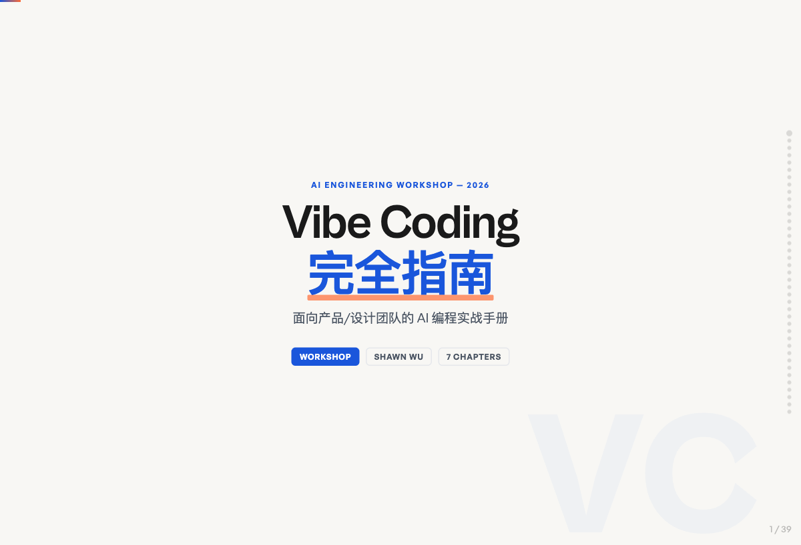
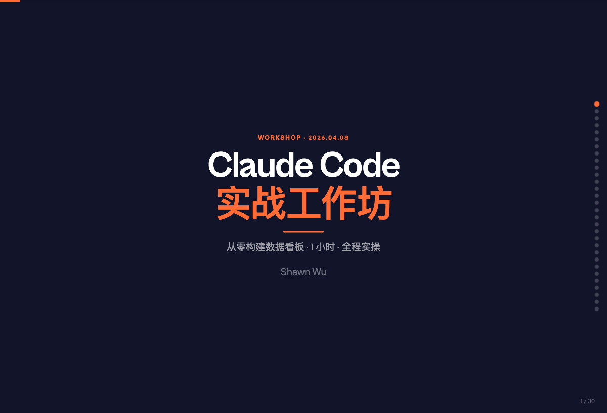

关注如何用 AI 工具快速将想法变成可用的产品。在这里分享我的项目、实践和思考。
从概念到工具全景，讲清 Vibe Coding 是什么、底层架构如何运作，以及如何上手第一个项目。

一场动手工作坊：从环境准备到数据看板上线，覆盖迭代优化、进阶功能与插件深度使用。

ShawnWu，AI Builder。相信最好的工具是自己造出来的。 用 AI 把脑海中的想法快速变成真实可用的产品，并在这里记录构建过程中的方法和心得。